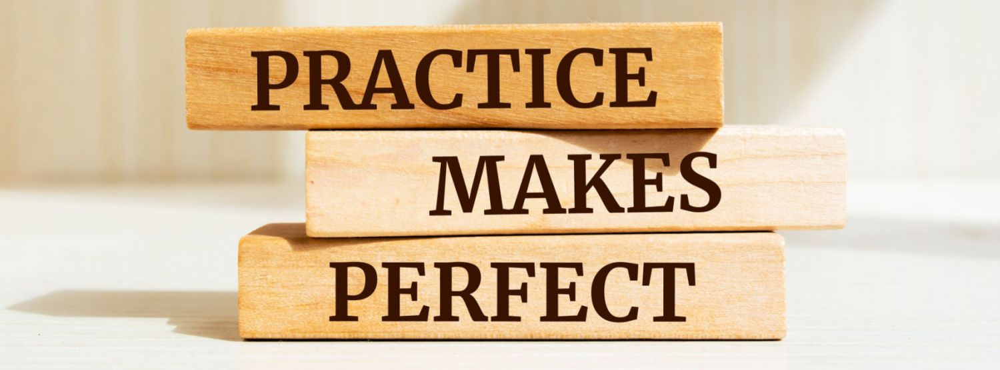

All About Me
Hey! I’m Abdulai Bayoh, 17 years old, and this site records my 3-year programming journey at Horizon Science Academy. I’m a slow learner, so my progress reflects the amazing support and teaching from my instructors.
How I've Grown
I've improved a lot—not just technically but in how I approach problems. Every mistake was a lesson, and every success boosted my confidence. This journey has changed how I think about challenges.